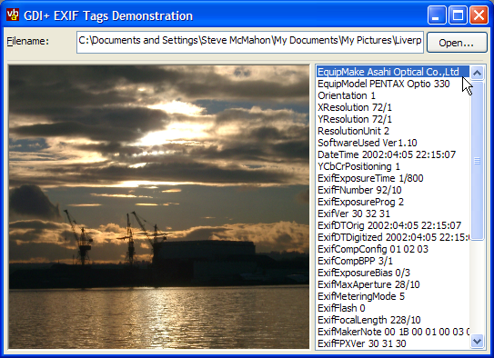

GDIPlus EXIF Tags (18K)
GDIPlus EXIF Tags (18K)
 Bugs: 1 / 1
Bugs: 1 / 1
 Issues: 0 / 0
Issues: 0 / 0
 Questions: 0 / 0
Questions: 0 / 0
 28 Mar 2003
28 Mar 2003
First Posted
 GDI+ Type Library (GDIPlus.TLB)
GDI+ Type Library (GDIPlus.TLB)

Reading EXIF and Other Image Properties Using GDI+
Complete access to EXIF and TIFF Image tags.
Many digital cameras record information about when and how a picture was taken using the EXIF format (which is slowly becoming the DCF format under ISO). You can read and write this information using GDI+; not just that but you can also read the image metadata from TIF and PNG files.
Getting Started
As with the other GDI+ samples at the site, you'll need the GDIPlusWrapper and the GDI+ Type Library to run this sample. The code also requires VB6.
About EXIF Tags
EXIF tags are an extension of the JPEG format used to store particular information about the make and model of a camera, when a picture was taken and digitised, information about the resolution of the image and things like the exposure time, focal length and whether a flash was used to take the photo.
if you're interested in the details of EXIF then read TsuruZoh Tachibanaya's Description of Exif file format which goes through most of the EXIF tags and exactly how they are stored.
GDI+ provides a PropertyItem class that contains details of meta-data associated with an image. This covers all types of image meta-data, and not just EXIF, so you can also use it to investigate information stored in TIF and PNG files too.
Meta-data and particularly EXIF tags have different storage formats defined to allow multiple types of data to be stored. For example, the camera model is stored as ASCII, whilst the things like the focal length are stored as a series of rational (basically a fraction; one value stores the numerator and the other the denominator) value.
The GDI+ PropertyItem class shirks any responsibility for decoding this information and simply presents you with a pointer to an area of memory containing the data. This sample demonstrates how to decode the basic types and thus display and use the information.
Reading EXIF Tags
The GDI+ Wrapper provides the following properties and methods as part of the GDIPImage class for reading and manipulating the EXIF tags and meta data of an Image:
- PropertyCount
Returns the total number of properties associated with an image. - PropertyItem
Returns a GDIPPropertyItem object for the property at the specified index. - PropertyItemForID
Returns a GDIPPropertyItem object for the property with the specified ID if it exists, or Nothing otherwise. A complete list of all available IDs is provided in the PropertyTag enumeration of the GdiPlus Type Library. - RemovePropertyItem
Removes the property item with the specified id. - SetPropertyItem
Adds or updates a property item using the property item details passed in with the GDIPPropertyItem tag.
The GDIPPropertyItem class provides methods to read and manipulate properties of an item. A property item consists of an ID (one of the PropertyTag enumeration values, a Type (one of the PropertyTagType enumeration values), the Length (which is the total size of the binary data associated with the tag) and the data for the tag that is stored as a byte array. The Name property provides a lookup between the item's ID and a text string specifying its name.
To make it easier to use the data, a number of helper methods are provided for interpreting the data. The following table demonstrates how to use the helper methods to convert the byte data into a more usable form:
| Data Type | Method | Result |
| PropertyTagTypeASCII | ParseString | A VB string containing the data. |
| PropertyTagTypeLong | ParseLong(ByVal lItem As Long) | A VB long containing the item at the 1-based index lItem. lItem must be greater than 0 and less than equal to the number of values associated with the property (use the ValueCount to get this.) |
| PropertyTagShort | ParseShort(lItem) | An Integer containing the item at the 1-based index lItem. |
| PropertyTagTypeRational | ParseRational(lItem) | A variant array containing two values for the item at the 1-based index lItem. The first value contains the numerator of the fractional value, the second the denominator. |
With this information, you can now start working with the EXIF values. The code used in the sample to render the EXIT tags is as follows:
Private Sub showEXIFTags(img As GDIPImage)
Dim i As Long
Dim sItem As String
Dim prop As GDIPPropertyItem
Dim j As Long
Dim v As Variant
Dim s As String
For i = 1 To img.PropertyCount
Set prop = img.PropertyItem(i)
sItem = prop.Name & " "
Select Case prop.ItemType
Case PropertyTagTypeASCII
sItem = sItem & prop.ParseString()
Case PropertyTagTypeRational, PropertyTagTypeSRational
For j = 1 To prop.ValueCount
If (j > 1) Then
sItem = sItem & ", "
End If
v = prop.ParseRational(j)
sItem = sItem & v(1) & "/" & v(2)
Next j
Case PropertyTagTypeLong
For j = 1 To prop.ValueCount
If (j > 1) Then
sItem = sItem & ", "
End If
sItem = sItem & prop.ParseLong(j)
Next j
Case PropertyTagTypeShort
For j = 1 To prop.ValueCount
If (j > 1) Then
sItem = sItem & ", "
End If
sItem = sItem & prop.ParseShort(j)
Next j
Case PropertyTagTypeUndefined
ReDim b(0 To prop.ValueCount - 1) As Byte
prop.GetData b
For j = 1 To prop.ValueCount - 1
If (j > 1) Then
sItem = sItem & " "
End If
s = Hex(b(j - 1))
If Len(s) = 1 Then s = "0" & s
sItem = sItem & s
Next j
Case Else
sItem = sItem & prop.ItemType & " " & prop.Length
End Select
lstEXIFTags.AddItem sItem
Next i
End Sub
Of course, there's more you can do to make this user friendly. For example, the dates used for the time the photo was taken and digitised are provided in ISO format as a string. You can easily convert this to a DateTime:
Public Function ISODateTimeToDate( _
ByVal isoDateTime As String _
) As Date
Dim dDate As Date
dDate = DateSerial( _
Mid(isoDateTime, 1, 4), _
Mid(isoDateTime, 6, 2), _
Mid(isoDateTime, 9, 2)) + _
TimeSerial( _
Mid(isoDateTime, 12, 2), _
Mid(isoDateTime, 15, 2), _
Mid(isoDateTime, 18, 2))
ISODateTimeToDate = dDate
End Function
Another example is the Flash value (PropertyTagExifFlash = &H9209&). This is returned as an integer, but referring to the EXIF Tag Description document we see the available values are:
- 0 - flash did not fire.
- 1 - flash fired.
- 5 - flash fired but strobe return light not detected.
- 7 - flash fired and strobe return light detected.